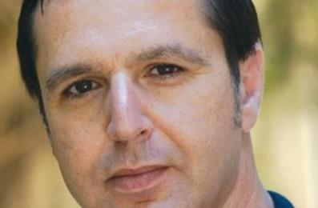

23 mars 2014
« Si vous regardez la TV palestinienne, télévision financée par L’Union Européenne, pas plus que 12 minutes, vous prenez un couteau et vous allez tuer des Juifs! »
Ainsi parlait Khaled Abou Toameh lors d’une réunion organisée par l’Institut américain Gatestone, jeudi dernier au Sénat. Khaled Abou Toameh, documentariste, journaliste au Jerusalem Post, après avoir officié au Wall Sreet Journal et au Sunday Times de Londres, est Arabe Israélien et vit à Jérusalem.

Pour ce quinquagénaire élégant, à l’humour féroce, les États-Unis et l’Europe ont la tête dans le sable et ne cessent de commettre des erreurs. La plus flagrante est de n’avoir jamais demandé de contreparties pour les sommes d’argent considérables versées aux dirigeants palestiniens. Tout d’abord, en les obligeant à faire cesser cette propagande meurtrière contre les Juifs, à l’école ou à la télévision. Ensuite, en exigeant des comptes, tout simplement. Cette négligence coupable remonte au temps d’Arafat dont personne ne peut nier aujourd’hui qu’il fut, avec l’aide de sa femme, un escroc. Khaled Abou Toameh a travaillé pour lui pendant sept ans, il le connaissait bien et découvrir sa malhonnêteté ne fut pas un choc. Mais le chef de l’OLP était un prix Nobel! « Comment douter de sa droiture? », ironise le journaliste. Le peuple palestinien n’a goûté aucun fruit de cette abondance financière. C’est une des raisons pour lesquelles il s’est détourné du processus de paix. Mieux valait écouter les sirènes du Hamas, qui comme la petite bête est monté, monté en éjectant un à un les gens de l’OLP, jusqu’à gagner les élections. Les USA et l’UE n’en ont pas moins continué leurs erreurs. Laisser croire que le chemin vers la paix est une histoire d’implantations et de check points est faux. Ils refusent d’entendre que c’est l’existence même de l’État d’Israël qui est en jeu chez les dirigeants palestiniens et dans la majorité du monde arabe. « Je ne peux pas aller à Ramallah et organiser une réunion pour la paix », avoue Khaled Abou Toameh. Le peuple est shooté à la haine du Juif. Le Juif c’est le diable. Les médias arabes et étrangers enfoncent le clou: si je propose un sujet sur les exactions du Hamas, ça n’intéresse personne, contrairement au moindre méfait de la part d’Israël. Comment croire à une paix future si on ne prépare pas les populations à cette paix? Mais laquelle? Quid du processus? Le processus actuel est tronqué. Les mêmes fautes du passé recommencent. Mahmoud Abbas, comme Arafat en 2000, prétend vouloir faire la paix mais en être empêché. Comme s’il pouvait parler au nom des Palestiniens! Il n’en a pas la légitimité. S’il signe avec les Israéliens, il ne pourra même pas mettre les pieds à Gaza, tant il est pris pour un modéré. Il a les pieds et mains liés et joue de sa faiblesse, surtout quand il rencontre Obama ».
Khaled Abou Toameh est inquiet: « Si les États-Unis forcent Israël à lâcher des concessions, ces bouts de terre reviendront directement au Hamas. Aujourd’hui, le vrai problème ce n’est pas Mahmoud Abbas, mais c’est qu’aucun leader arabe n’a de mandat pour négocier avec Israël ». Khaled Abou Toameh se dit en faveur de deux États, même s’il pense que ça ne peut pas marcher. Avec un humour déconcertant il ajoute: en fait, les deux États, on les a: Gaza et la Cisjordanie. D’un côté, une situation impensable gérée par un islamisme radical, qui menace gravement le Sinaï et l’Égypte. De l’autre un mini État OLP financé par l’UE et les USA où l’OLP reste au pouvoir tant que la présence israélienne demeure. Même si l’OLP est obligée de tenir un discours contre les Juifs, ils savent que c’est eux qui parviennent encore à séparer Gaza et la Cisjordanie qui se font la guerre. Quand Toameh parle de la démocratie en Israël, il raille les discours sur le soi-disant Apartheid dont on accuse l’État hébreu: « L’Apartheid existe bien, mais il est dans les pays Arabes. Qui voudrait quitter Israël pour aller vivre dans ces pays? Personne ». À écouter ce journaliste arabe israélien, on se demande combien ils sont comme lui à ne pas réussir à se faire entendre. Ne crient-ils pas assez fort? Ou bien les idéologues antisionistes/antisémites choisissent-ils de rester sourds? L’homme parcourt le monde: Des campus universitaires américains, aux médias français, il constate une haine grandissante. « Aussi, nous ne devrons pas être surpris que la prochaine génération de djihadistes soit issue non de la bande de Gaza, des montagnes ou des mosquées du Pakistan et de l’Afghanistan, mais de ces campus universitaires américains », prévient-il. « Un homme, ça s’autorise », aurait aussi pu dire Camus. C’est ce que fait Khaled Abou Toameh avec un courage remarquable. Maya Nahum http://www.causeur.fr/arabe-israelien-arafat-hamas,26699#
Khaled Abu Toameh est un journaliste et producteur de télévision arabe israélien primé qui rend compte des Palestiniens depuis plus de 30 ans. Il a étudié à l'Université juive et a commencé sa carrière en tant que journaliste en travaillant pour un journal affilié à l'OLP à Jérusalem. Il est Senior Fellow à l'Institut Gatestone et au correspondant des affaires palestiniennes pour le Times of Israel. Il a précédemment travaillé pour NBC News et le Jerusalem Post. Les articles d'Abou Toameh sont parus dans de nombreux journaux à travers le monde, y compris le Wall Street Journal, US News and World Report, et le Sunday Times de Londres.
Dans ses articles, Abu Toameh expose des mensonges palestiniens et explique pourquoi le fondamentalisme islamique est le principal obstacle à la paix au Moyen-Orient.